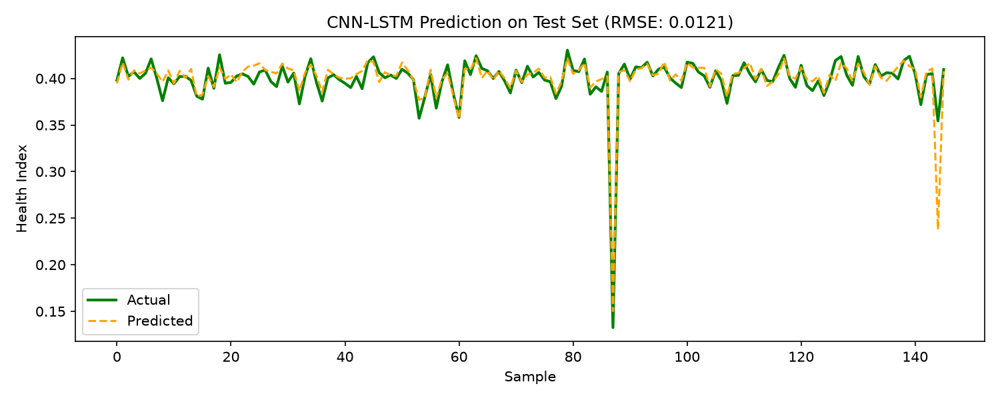

1 ผลของโมเดลนี้
🧬 CNN-LSTM Hybrid CNN + RNN #4 อันดับ 4 จาก 4
0.0121
RMSE ↓
0.0064
MAE ↓
0.8977
Pearson r ↑
0.7844
R² ↑
250K
Parameters
46
Epochs ที่เทรนจริง
วัดบน test set 146 ตัวอย่างที่โมเดลไม่เคยเห็น · RMSE สูงกว่าอันดับ 1 (BiLSTM) อยู่ 53.9%
RMSE คิดเป็น 4.1% ของช่วง Health Index ทั้งหมด (0.298)
RMSE คิดเป็น 4.1% ของช่วง Health Index ทั้งหมด (0.298)
🧪 เทียบกับ baseline ที่ไม่ต้องเรียนรู้อะไรเลย
Health Index ใน test set กระจุกตัวสูงมาก — 84% ของตัวอย่างอยู่ในช่วง ±0.02 รอบค่ากลาง ดังนั้นแค่ ทายค่าเฉลี่ยเท่ากันทุกครั้ง ก็ได้ RMSE 0.0261 แล้ว
โมเดลนี้ทำได้ 0.0121 — ดีกว่า baseline อยู่ 54% (ตรงกับค่า R² = 0.7844)
ตัวเลข RMSE ที่ดูน้อยมากจึงต้องอ่านคู่กับบรรทัดนี้เสมอ ไม่ใช่อ่านลอย ๆ
Health Index ใน test set กระจุกตัวสูงมาก — 84% ของตัวอย่างอยู่ในช่วง ±0.02 รอบค่ากลาง ดังนั้นแค่ ทายค่าเฉลี่ยเท่ากันทุกครั้ง ก็ได้ RMSE 0.0261 แล้ว
โมเดลนี้ทำได้ 0.0121 — ดีกว่า baseline อยู่ 54% (ตรงกับค่า R² = 0.7844)
ตัวเลข RMSE ที่ดูน้อยมากจึงต้องอ่านคู่กับบรรทัดนี้เสมอ ไม่ใช่อ่านลอย ๆ
2 สถาปัตยกรรม
🧱 โครงสร้างทีละชั้น
Input(B, 20, 56)
20 timestep x 56 features
↓
Conv1D(64, k=7) + BN + ReLU(B, 64, 20)
สกัด local pattern ข้าม feature
↓
MaxPool(2)(B, 64, 10)
ลดความยาวลงครึ่งหนึ่ง
↓
Conv1D(128, k=5) + BN + ReLU(B, 128, 10)
สกัด pattern ที่ซับซ้อนขึ้น
↓
MaxPool(2)(B, 128, 5)
เหลือ 5 timestep
↓
LSTM(128) + Dropout(0.3)(B, 5, 128)
เรียนรู้ลำดับเวลา
↓
LSTM(64) + Dropout(0.3)(B, 5, 64)
บีบให้กระชับ
↓
Last timestep → FC(32) → FC(1) → Sigmoid(B,)
Health Index ∈ (0, 1)
💡 แนวคิดเบื้องหลัง
แนวคิดคือให้ CNN ทำหน้าที่อ่าน "รูปร่าง" ของสัญญาณในช่วงสั้น ๆ ก่อน แล้วส่งผลลัพธ์ที่กลั่นแล้วให้ LSTM เรียนรู้แนวโน้มระยะยาว เป็นสถาปัตยกรรมที่ถูกใช้บ่อยที่สุดในงาน RUL prediction
✅ ข้อดี
- จับได้ทั้ง local shape และ temporal trend ในโมเดลเดียว
- BatchNorm ทำให้ training เสถียร ไม่ค่อยมีปัญหา gradient
⚠️ ข้อจำกัด
- พารามิเตอร์เยอะที่สุดในการทดลองนี้
- MaxPool 2 ชั้นบีบ sequence จาก 20 เหลือ 5 → เสีย temporal resolution
- มี hyperparameter ให้ tune เยอะ (kernel size, pool size, channel)
3 การเทรน
📉 Loss ต่อ epoch
แกน Y เป็น log scale — ถ้าเส้น train ลงเรื่อย ๆ แต่ val เริ่มเชิดขึ้น แปลว่าเริ่ม overfit
⚙️ รายละเอียดการเทรน
| รายการ | ค่า |
|---|---|
| Epochs ที่เทรนจริง | 46 (สูงสุด 100) |
| หยุดด้วย Early stopping | ใช่ (val loss ไม่ดีขึ้นติดกัน 15 epoch) |
| Val loss ต่ำสุด | 0.000119 |
| เวลาเทรนรวม | 11.7 วินาที |
| เวลาต่อ epoch | 0.25 วินาที |
| จำนวนพารามิเตอร์ | 250,497 |
| Loss function | MSE |
| Optimizer | AdamW (lr 5e-4, wd 1e-4) |
| LR schedule | CosineAnnealing → 1e-5 |
| Gradient clipping | max_norm = 1.0 |
เก็บ checkpoint ที่ val loss ต่ำสุด แล้วโหลดกลับมาวัดผลบน test set
→ ตัวเลข test ไม่เคยถูกใช้เลือกโมเดล
4 ผลการทำนายบน Test Set
📈 ค่าจริง vs ค่าที่ทำนาย
เรียงตัวอย่างตามค่า Health Index จริงจากมากไปน้อย (เพราะ test set ถูกสุ่มลำดับ)
เส้นทำนายยิ่งทาบเส้นจริงยิ่งดี
🎯 Scatter: จริง vs ทำนาย
📊 การกระจายของ Error
🔎 ดู error ละเอียด
| สถิติของ |error| | ค่า | ความหมาย |
|---|---|---|
| Median (P50) | 0.0050 | ครึ่งหนึ่งของตัวอย่างพลาดน้อยกว่านี้ |
| P90 | 0.0117 | 90% พลาดน้อยกว่านี้ |
| P95 | 0.0146 | 95% พลาดน้อยกว่านี้ |
| Max | 0.1168 | ตัวอย่างที่พลาดหนักที่สุด |
| Bias เฉลี่ย | +0.00133 | ทำนายสูงกว่าค่าจริงโดยเฉลี่ย |
อ่านยังไง
ถ้า RMSE (0.0121) สูงกว่า MAE (0.0064) มาก แปลว่ามีตัวอย่างส่วนน้อยที่พลาดหนักและดึงค่าเฉลี่ยขึ้น — ดูได้จากหางขวาของกราฟการกระจาย error
ถ้า RMSE (0.0121) สูงกว่า MAE (0.0064) มาก แปลว่ามีตัวอย่างส่วนน้อยที่พลาดหนักและดึงค่าเฉลี่ยขึ้น — ดูได้จากหางขวาของกราฟการกระจาย error
Bias บอกอะไร
ค่าบวก = โมเดลมองโลกในแง่ดีเกินจริง (ทำนายว่าสุขภาพดีกว่าความเป็นจริง) ซึ่งอันตรายกว่าในงานบำรุงรักษา เพราะอาจพลาดสัญญาณเตือน
ค่าบวก = โมเดลมองโลกในแง่ดีเกินจริง (ทำนายว่าสุขภาพดีกว่าความเป็นจริง) ซึ่งอันตรายกว่าในงานบำรุงรักษา เพราะอาจพลาดสัญญาณเตือน
🖼️ กราฟจากสคริปต์เทรน (matplotlib)

5 ยืนอยู่ตรงไหนเทียบกับโมเดลอื่น
🏁 อันดับทั้งหมด
| อันดับ | Model | RMSE ↓ | MAE ↓ | Pearson r ↑ |
|---|---|---|---|---|
| 🥇 | BiLSTM | 0.0079 | 0.0058 | 0.9536 |
| 🥈 | LSTM | 0.0084 | 0.0063 | 0.9471 |
| 🥉 | Transformer | 0.0117 | 0.0070 | 0.8993 |
| #4 | CNN-LSTM ← หน้านี้ | 0.0121 | 0.0064 | 0.8977 |
RMSE สูงกว่าอันดับ 1 (BiLSTM) อยู่ 53.9% ·
ดูหน้าเปรียบเทียบเต็ม →